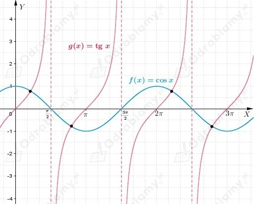
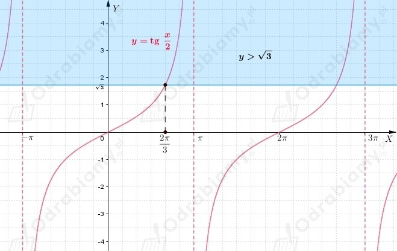

Wiemy, że
Zauważmy, że funkcja sinus przyjmuje wartości dodatnie w I i II ćwiartce układu współrzędnych.
Zatem dostajemy
| Przypomnijmy, że
|
Więc wnioskujemy, że
W odpowiedziach do zadania mamy:
Odp: Poprawną odpowiedzią do zadania jest odpowiedź D.
Wiemy, że
Zauważmy, że ramię końcowe kata 𝛼 jest położone w III ćwiartce układu współrzędnych.
Wiemy, że
Zatem
Odp: Poprawną odpowiedzią do zadania jest odpowiedź C.
Wiemy, że
Musimy obliczyć wartość wyrażenia
Znamy wartość cosx, więc do obliczenia wartości powyższego wyrażenia musimy obliczyć wartość sinx.
Korzystając z jedynki trygonometrycznej dostajemy
Zauważmy, że skoro
to ramię końcowe kąta x znajduje się w III ćwiartce układu współrzędnych, zatem
Wnioskujemy, że
Mając wszystkie potrzebne dane możemy powrócić do obliczenia wartości wyrażenia podanego w treści zadania
Odp: Poprawną odpowiedzią do zadania jest odpowiedź A.
Wiemy, że
Założenie
Musimy obliczyć wartość wyrażenia
Wiemy, że
zatem
Korzystając z tożsamości trygonometrycznej dostajemy
Korzystając z jedynki trygonometrycznej mamy
Skoro
Powracamy do wyrażenia z treści zadania i dostajemy
Odp: Poprawną odpowiedzią do zadania jest odpowiedź A.
Wiemy, że
Należy obliczyć wartość wyrażenia
Korzystając ze wzoru na cosinus podwojonego kąta dostajemy
zatem
Odp: Poprawną odpowiedzią do zadania jest odpowiedź B.
Obliczmy wartość wyrażenia korzystając ze wzoru na sinus różnicy kątów
Odp: Poprawną odpowiedzią do zadania jest odpowiedź B.
Obliczmy wartość liczby a korzystając ze wzoru na cosinus sumy i różnicy katów oraz wzorów redukcyjnych.
Zauważmy, że
Zatem
Odp: Poprawną odpowiedzią do zadania jest odpowiedź A.
Z treści zadania wiemy, że n jest liczba punktów wspólnych wykresów funkcji f(x)=cosx oraz g(x)=tgx, gdzie x ∈ ⟨0; 99𝜋〉.
Wiemy również, że
Spójrzmy na wykres funkcji f i g.

Możemy zauważyć, że wykresy funkcji f i g mają 2 punkty wspólne w każdym z przedziałów
Wiemy, że
Czyli wnioskujemy, że dla
dostajemy przedziały, które zawierają się w przedziale ⟨0; 99𝜋〉.
Łącznie mamy w tym zbiorze 50 liczb całkowitych.
Zatem w przedziale ⟨0; 99𝜋〉 funkcje f i g mają 2∙50=100 punktów wspólnych.
Odp: Poprawną odpowiedzią do zadania jest odpowiedź C.
Rozpiszmy prawą stronę każdego z podanych wyrażeń.
Odp: Poprawna odpowiedzią do zadania jest odpowiedź C.
Rozwiążmy każde z podanych równań i sprawdźmy ile ma rozwiązań w przedziale ⟨-2𝜋; 2𝜋〉.
zatem
Z wykresu funkcji y=cosx możemy oczytać, że równanie w przedziale ⟨-2𝜋; 2𝜋〉 ma 8 rozwiązań.
zatem
Z wykresu funkcji y=cosx możemy oczytać, że równanie w przedziale ⟨-2𝜋; 2𝜋〉 ma 5 rozwiązań.
zatem
Z wykresu funkcji y=sinx możemy oczytać, że równanie w przedziale ⟨-2𝜋; 2𝜋〉 ma 8 rozwiązań.
zatem
Z wykresu funkcji y=sinx możemy oczytać, że równanie w przedziale ⟨-2𝜋; 2𝜋〉 ma 4 rozwiązania.
Odp: Poprawną odpowiedzią do zadania jest odpowiedź D.
Rozwiążmy nierówność
Wiemy, że
zatem
Naszkicujmy wykres funkcji y=tgx/2.

Z wykresu funkcji odczytujemy, że
Zauważmy, że
Wnioskujemy, że najmniejszą liczbą naturalną spełniającą podaną nierówność jest liczba 3.
Odp: Poprawną odpowiedzią do zadania jest odpowiedź C.